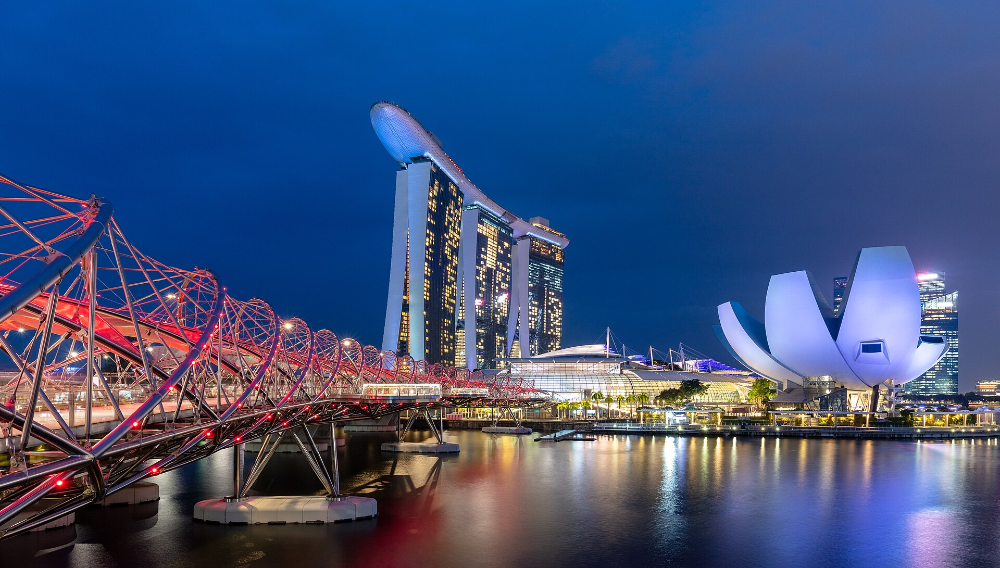
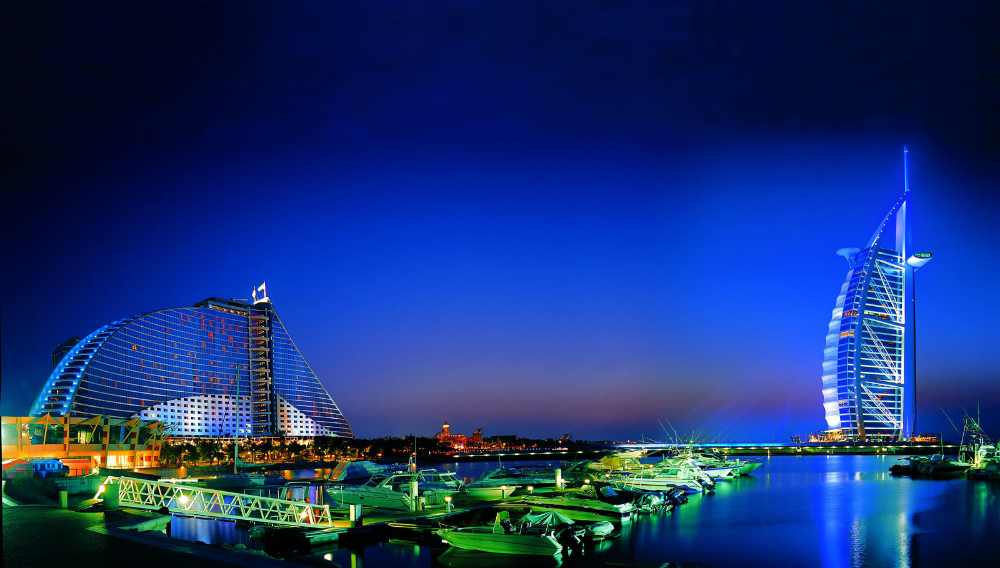
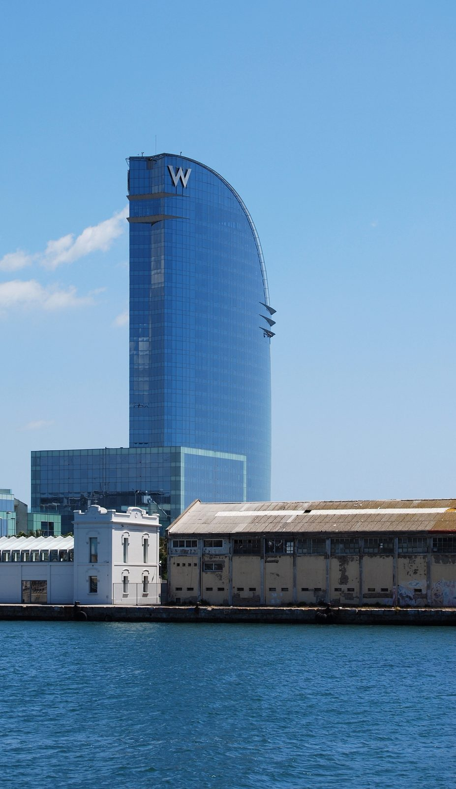
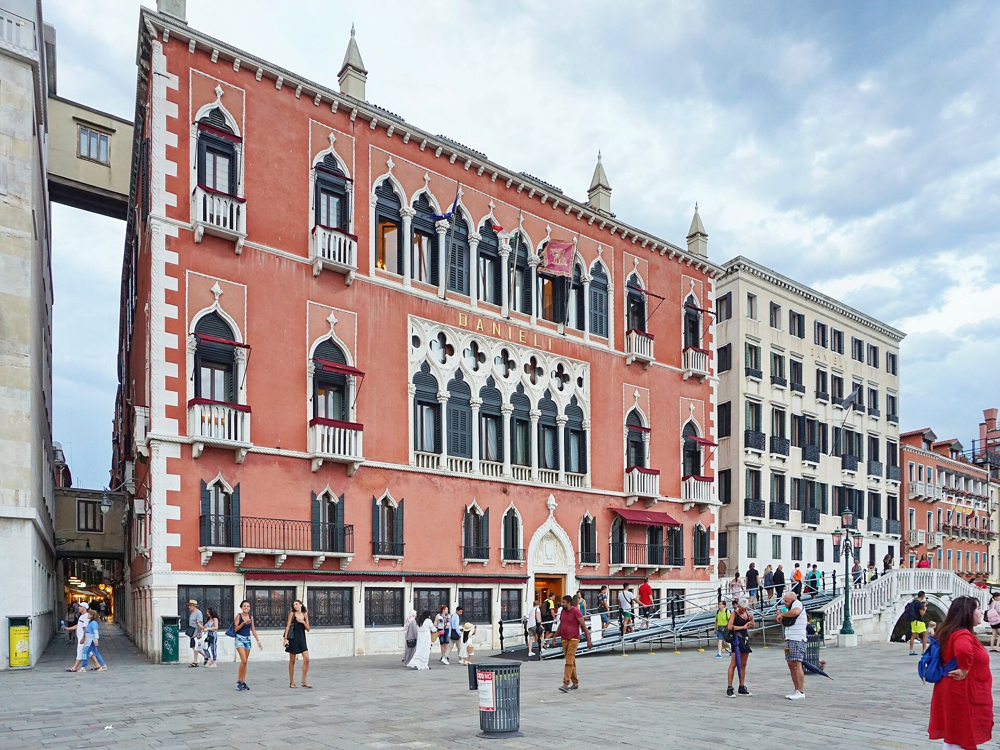

숙소 찾기부터 현지인 친구와의 채팅까지, 여행 준비를 한 곳에서 시작해요.




예시 프로필이에요. 이름, 평점, 후기 수는 모두 예시이고 실제 가입자가 아니에요.
골목 카페요? 제 단골집 알려드릴게요 😊
크루아상은 꼭 이 집에서 드셔보세요!
야시장은 7시 이후가 진짜예요 🌙
사진 맛집 골목, 같이 가요 📷
관광객 없는 트라토리아 데려갈게요
브런치 후에 서핑 구경 어때요? 🌊
도시를 고르면 그 도시의 숙소·관광지와 근처에 사는 현지인 친구를 지도에서 볼 수 있어요. 어떤 핀을 볼지는 아래 버튼으로 고를 수 있고, 친구 활동 지역 표시는 예시 화면이에요.
핀을 누르면 장소 이름과 간단한 정보가 떠요. 초록 핀은 관광지, 파랑 핀은 숙소, 보라 핀은 현지인 친구(예시)예요. 숙소·관광지는 OpenStreetMap의 실제 장소 데이터예요.
예시 대화예요. 실제 채팅은 친구 찾기에서 시작할 수 있어요.